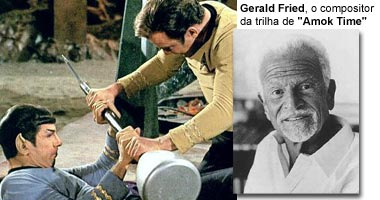
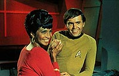
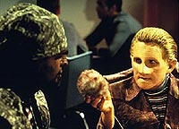
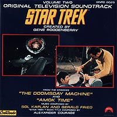

|

Clique aqui
para visitar o
Acervo de colunas


|
Nada como msica clssica... Se h algum valor de produo em
que a Srie Clssica ultrapassa de longe as sries
posteriores de Jornada nas Estrelas a msica composta
para os episdios. Acredito que no h um f que simplesmente
ouvindo uma determinada msica da srie deixe de relembrar os
momentos antolgicos em que ela foi tocada.  As sries atuais de Jornada nas Estrelas nunca tiveram msicas to associveis prpria srie como teve a Srie Clssica. As trilhas atuais so insuportavelmente repetitivas em seus temas, sendo que dificilmente algum f conseguir lembrar de um episdio ao ouvir a msica deste. Lgico que h excees, como a trilha de "The Inner Light" e "A Fistful of Datas", da Nova Gerao, e "Emissary", da Deep Space Nine, que compem o seleto grupo de rarssimas trilhas sonoras decentes das sries atuais. Acredito que a ltima verdadeira magnfica trilha sonora de uma srie contempornea de Jornada tenha sido a de "The Best of Both Worlds", da Nova Gerao, composta pelo excelente Ron Jones. E isso foi h quase 11 anos. Como Rick Berman no gostava muito do estilo de Ron Jones, houve atritos que resultaram em sua sada durante o quarto ano da srie. Foi um dos primeiros atos de tirania de Berman contra a qualidade das sries atuais de Jornada. De 1990 para c s se salvam os temas de abertura de Deep Space Nine e Voyager, pois 99% das msicas compostas para cada episdio eram no mximo razoveis, sendo algumas insuportveis. Eu, pelo menos, nunca consegui escutar um CD inteiro de A Nova Gerao, Deep Space Nine ou Voyager. Os 1% pertencem a episdios j mencionados acima, como "The Inner Light", "Emissary" etc. Mas a srie que com certeza levar o trofu de pior trilha e pior tema de abertura ser Enterprise. Ainda no me conformei com a cafona "Faith in the Heart" da abertura. Sempre que assisto um episdio dessa srie fao questo de acionar o fast forward do vdeo durante a abertura. A trilha composta para cada episdio tambm lastimvel. A msica dos crditos finais com variaes instrumentais da abertura o fundo do poo.  Uma excelente oportunidade de comparao entre a qualidade das trilhas sonoras da Srie Clssica e das sries atuais pode ser feita assistindo-se aos episdios "The Trouble With Tribbles", da Srie Clssica, composta por Fred Steiner, e "Trials And Tribble-ations", da Deep Space Nine, em que Sisko, Kira, Odo e cia. voltam no tempo e graas magia dos efeitos especiais podem contracenar com Kirk, Spock e cia. nos eventos do episdio supracitado da Srie Clssica. Enquanto trilha do primeiro episdio engraada, empolgante e inesquecvel, a trilha do segunda fria, sem graa e totalmente esquecvel. Mas, fora a trilha, nada contra o referido episdio de DS9, que eu considero um dos melhores da srie.Note-se que durante a produo da Srie Clssica era permitida a reutilizao da trilha sonora de um episdio em outro sem a necessidade de chamar de novo o compositor. J da Nova Gerao at hoje o sindicato dos compositores exige que cada episdio de qualquer srie de TV tenha trilha independente, ou seja, para cada episdio um compositor deve ser contratado sem a possibilidade de reutilizao da trilha sua revelia.  Assim, as sries atuais de Jornada tm um nmero imenso de trilhas sonoras, chegando a mais de 500 levando-se em conta o nmero de episdios produzidos de 1987 (lanamento da Nova Gerao) at hoje. A Srie Clssica, por outro lado, tem pouqussimas trilhas sonoras, mas a maioria de tima qualidade, extremamente criativa e sempre dando o toque certo para a cena certa, seja humor, aventura, romance, suspense etc. Por esse motivo que a repetio da mesma msica em diferentes episdios nunca foi um fator negativo, muito pelo contrrio, pois o casamento entre as cenas e as msicas era perfeito.Luiz
Felipe do Vale Tavares f de Jornada, DVDs e fico
cientfica e escreve sobre Srie Clssica para o Trek
Brasilis |